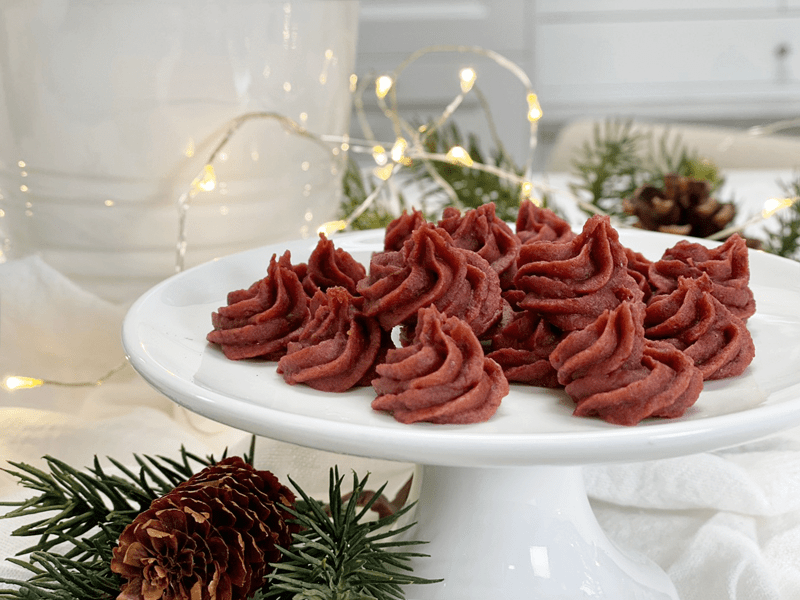

Peppermint Kisses
raw / vegan / gluten-free / nut-free
Raw Peppermint Kisses were created from the same batter as my raw candy canes. But just in case you are not even faintly interested in candy canes, I didn’t want you to miss out on the fun of creating Raw Peppermint Kisses.

I quickly decided that this was a great time to use my culinary Peppermint Oil. It contains numerous minerals and nutrients, including manganese, iron, magnesium, calcium, folate, potassium, and copper. It also contains omega-3 fatty acids, Vitamin A and Vitamin C. Whereas that all sounds fine and dandy, facts such as those don’t “speak” to many people. But this will get the attention of some; it did me. :) … Peppermint oil is beneficial as an aid for digestion.
You can put a few drops of peppermint oil in a glass of water and drink it before your meal for its beneficial digestive properties. It is known to be a carminative and therefore helps in removing excess gas. And it can relax the smooth muscles of the GI tract.
Peppermint oil is also an excellent home remedy for nausea and headaches. To quickly alleviate the pain of a headache, apply peppermint oil in a diluted form directly on the forehead. I often add a drop of peppermint oil to a dab of coconut oil between my palms, rubbing them together and then applying. Inhaling peppermint oil can eliminate the effects of nausea because of its relaxing and soothing effects.
There are so many other therapeutic uses for peppermint oil, and if it fascinates you, I encourage you to do further reading. It is a great oil to have handy in your pantry.
These raw peppermint kisses remain chewy, and if you throw all of them in a bag, they will stick to one another. But they do pull apart just fine and are really fun to eat. I made the mistake of leaving a dehydrator full of them on the table to cool as I was preparing my next creation to use them in (Raw Peppermint Kiss Ice Cream) and when I went to retrieve them, about half of them had been consumed by, I am guessing, little elves. Hehe, It’s all good though… to know that they were enjoyed is really all that matters to me.
 Ingredients:
Ingredients:
- 2 cups (329 g) Medjool dates or date paste
- 1/4 cup (63 g) beet juice
- 1 tsp peppermint extract or 3 drops peppermint essential oil
- 1/4 tsp (2 g) Himalayan pink salt
Preparation:
- To create beet juice, wash the beetroots thoroughly and rough chop into sizes that will fit in the juicer chute. Juice.
- If you don’t have a juicer, you can rough chop some beetroots and blend them with a touch of water in a high-powered blender.
- Then place in a mesh/nut bag and squeeze the juice from the bag. A little labor-intensive, but it can be done.
- In the food processor, fitted with the “S” blade, process the date paste, beet juice, peppermint extract, and salt until everything is well incorporated.
- Place the batter in a piping bag fitted with a star tip. Mine was about 1/4″ in diameter.
- Pipe the batter onto the teflex sheet.
- Start with the piping tip resting on the reflex sheet, hold the bag upright.
- As you apply gentle pressure to the bag, lift and give the tip a small swirl. See the photo below.
- Do this over and over and over and over…and over… till all of the batter is gone.
- Dehydrate at 115 degrees (F) for about 6 hours or until it is dry enough to remove and place directly on the mesh sheet. Continue drying for another 18 hours or until dry. The kisses won’t dry hard, but they shouldn’t be sticky.
- Store in an airtight container on the counter for several weeks.
© AmieSue.com